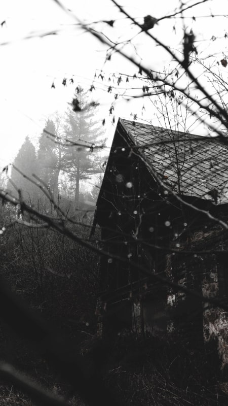

You must obtain permission from the copyright holder before
using any copyrighted material, such as images, text, or videos,
in your blog posts.
Gear Guide
on urban exploration, the significance of sturdy footwear cannot be overstated.
The journey will encompass traversing an array of terrains, ranging
Tips For Urban Uxploration
do some research to learn about the location. This includes
checking local laws to make sure you're not trespassing,
and finding out if the site is safe to
Photography and Documentation
Many urban explorers document their adventures through photography and videos.
These visuals capture the history, architecture, and decay of the places they visit.
Community and Forums
Urban explorers often connect through
online forums, social media groups, and local communities.

Exploration of Abandoned Places
Urban explorers are drawn to places like abandoned factories, hospitals, asylums,
schools, tunnels, and even theme parks that have been left to decay over time.
Cultural and Historical Interest
Urban exploration is not just about adventure; it's also a way to connect with history and culture.
Many abandoned sites have stories to tell about their past and the communities that once thrived there.
Environmental Awareness
Responsible urbexers are mindful of the environmental impact of their activities and aim to leave minimal traces behind.
They avoid disturbing wildlife and ecosystems in and around abandoned areas.
Adaptability and Problem-Solving
Urban explorers often need to adapt to unexpected challenges,
such as navigating dark and narrow spaces, overcoming obstacles, or finding alternative entry points.
Artistic Expression
Some urbexers view their exploration
and documentation as a form of artistic expression, using abandoned locations as a canvas to create compelling visual narratives.